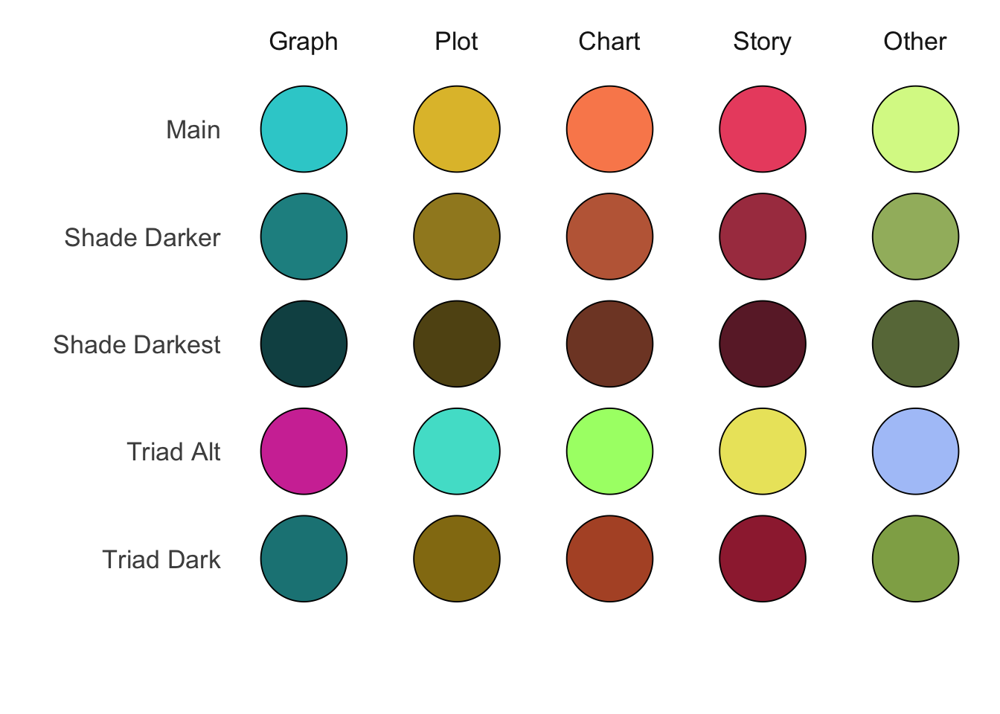
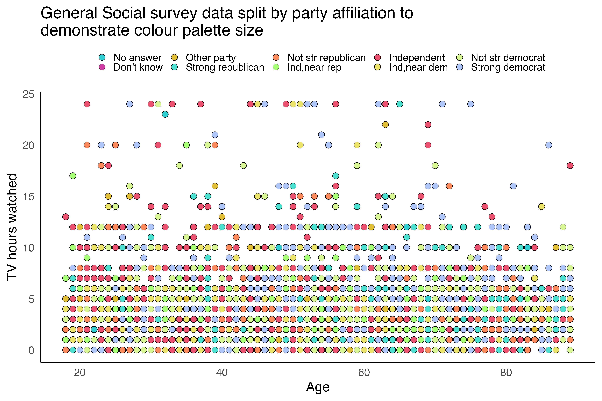
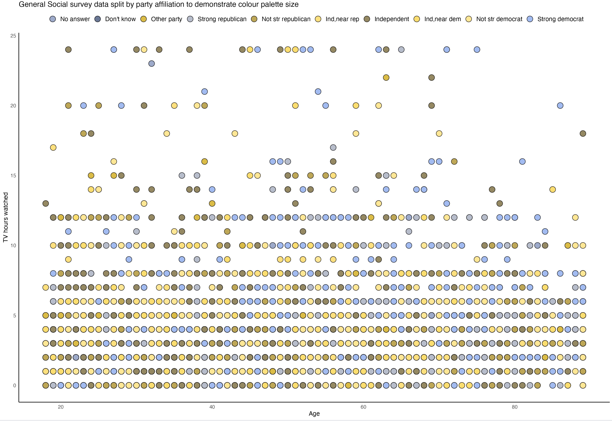

I’ve created an initial colour palette by combining two tools together https://coolors.co/ and https://color.adobe.com/create/color-wheel. These colours have been added into the {gpcsdTools} package, however they’re liable to change in the future - I’ll update this post with footnotes should that happen.
Here are the original colours:
The “main” and “triad alt” categories give us 10 colours of different hues we can theoretically use in a single chart. Here’s an example chart

Using the {colorblindr} package to simulate the most common form of colour blindness (deuteranomaly) we see the palette still performs surprisingly well.
